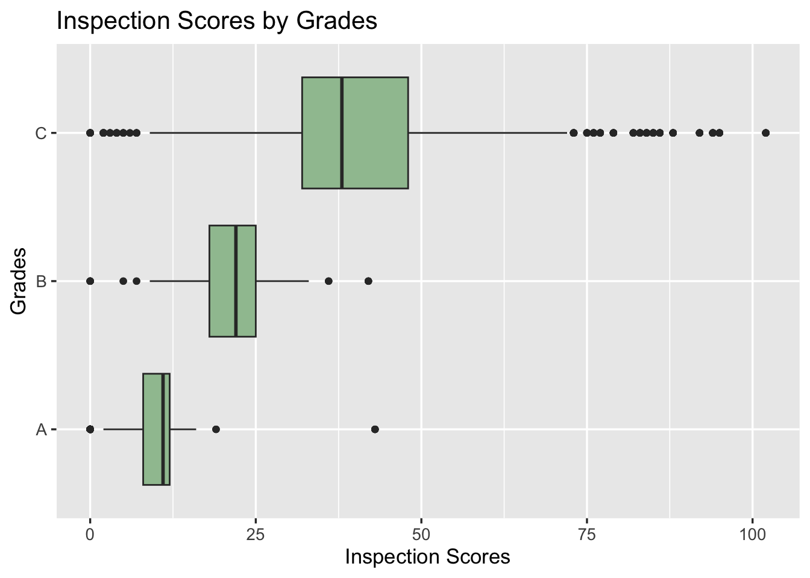
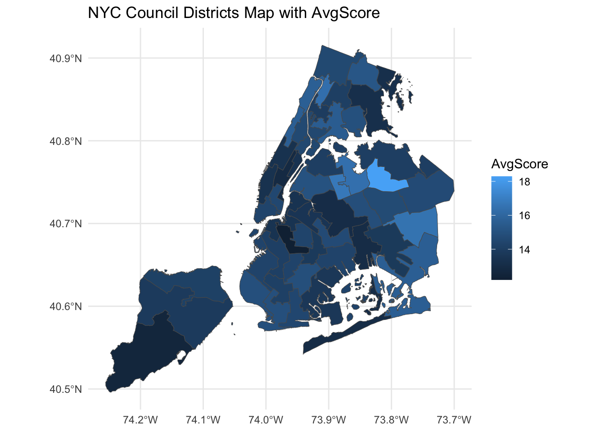
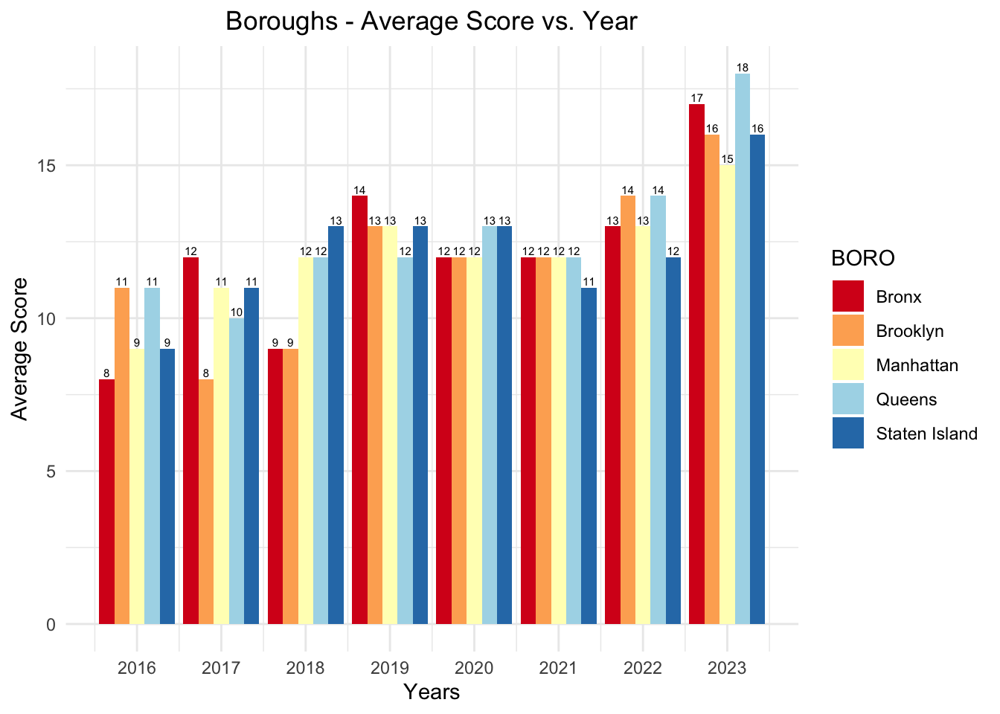

Most of the inspection scores are located around mean, which is around 23, and the distribution of the inspection scores is right-skewed. Note that low inspection scores mean good grade, and high inspection scores mean bad grade.
Note that there are around 50% missing data in variable GRADE. Among restaurants which have GRADE data, most of the restaurants got grade A.
Code
data %>%drop_na(SCORE, GRADE) %>%filter(GRADE %in%c("A", "B", "C")) %>%ggplot(aes(x = SCORE, y =fct_reorder(GRADE, SCORE, median))) +geom_boxplot(fill="#9FC29F") +labs(title="Inspection Scores by Grades",x="Inspection Scores",y="Grades") +theme_grey(13)

The visualization matches the expected corresponding grades for scores (A for 0-13, B for 14-27, C for 28+), and there are some unknown grades such as N, P, Z, which are dropped in the visualization. Note that grade C has outliers of low inspection scores, which are expected to get A or better grades.
3.2 Part1: Inspection results by Locations of Restaurants
Code
data %>%drop_na(SCORE, BORO) %>%ggplot(aes(x = SCORE, y =reorder(BORO,SCORE,median))) +geom_boxplot(fill="#9FC29F") +labs(title="Inspection Scores by BORO",x="Inspection Scores",y="BORO") +theme_grey(13)
Pearson's Chi-squared test
data: data$SCORE and data$BORO
X-squared = 4509.1, df = 516, p-value < 2.2e-16
All the boroughs have very similar average inspection scores and distribution. Note that Brooklyn, Manhattan and Queens have some outliers with the highest one in Manhattan. It is hard to tell if there is an association between boroughs and inspection scores by the visualization. However, according to the chi-square test, there is strong evidence, which is very small p-value, that there is association between inspection scores and boroughs.
Code
subset1 <- data %>%filter(GRADE %in%c("A", "B", "C"))vcd::mosaic(GRADE ~ BORO, subset1, direction =c("v", "h"), highlighting_fill =c("#35E445", "#1B3BF2", "#F2281B"))
Pearson's Chi-squared test
data: data$GRADE and data$BORO
X-squared = 392.16, df = 20, p-value < 2.2e-16
Staten Island has the highest proportion of grade A and lowest proportion of C, which seems the best result among all the boroughs. But the majority of the inspections grades are A in all the boroughs, and all the boroughs have similar proportion of grades according to the mosaic plot. It is hard to tell if there is an association between grades and boroughs by the mosaic plot. However, according to the chi-square test, there is strong evidence, which is very small p-value, that there is association between inspection grades and boroughs.
3.2.1 Average Inspection Scores by Districts
Code
data$Year =as.Date(data$`GRADE DATE`, format ="%m/%d/%Y")data$Year <-format(data$Year, format ="%Y")data$Year <-as.numeric(data$Year)data1 <- data %>%filter(!is.na(Year) &!is.na(SCORE) &!is.na(BORO) & Year>2015&!is.na(`Council District`) &!is.na(DBA) &!is.na(Latitude) &!is.na(Longitude) &!is.na(SCORE) &`Longitude`!=0&`Latitude`!=0)avg_scores <- data1 %>%group_by(`Council District`) %>%summarize(AvgScore =mean(SCORE))avg_scores$`Council District`<-as.character(as.numeric(avg_scores$`Council District`))# Read the geojson for NYC, make sure it includes council districtsnyc_districts <-st_read("NYC_City_Council_Districts.geojson", quiet =TRUE)# Join the data with the spatial data on council districtsnyc_districts <-left_join(nyc_districts, avg_scores, by =c("coun_dist"="Council District"))# Plotting the mapggplot(data = nyc_districts) +geom_sf(aes(fill = AvgScore)) +scale_color_viridis_c(trans ="reverse") +theme_minimal() +labs(title ="NYC Council Districts Map with AvgScore")

The lighter shades on the choropleth map across the districts of Queens suggest lower average scores compared to other boroughs, indicating that the sanitation standards in these areas may require attention and improvement.
3.2.2 Average Inspection Scores by Boroughs in every year
Code
avgscore_bar <- data1 %>%filter(!is.na(Year) &!is.na(SCORE) &!is.na(BORO) & Year>2015) %>%group_by(BORO, Year)avgscore_bar <- avgscore_bar %>%summarize(Avg_Score =round(mean(SCORE, na.rm =TRUE),0))ggplot(avgscore_bar, aes(fill = BORO, y = Avg_Score, x = Year)) +geom_bar(stat ="identity", position =position_dodge(width =0.9)) +theme_minimal() +geom_text(aes(label = Avg_Score), vjust =-0.3, position =position_dodge(width =0.9), size =2 ) +labs(title ="Boroughs - Average Score vs. Year", x ="Years", y ="Average Score") +scale_x_continuous(breaks =2016:2023, labels =2016:2023) +scale_fill_brewer(palette ="RdYlBu") +theme(plot.title =element_text(hjust =0.5))

Across all boroughs, it appears to be a trend of fluctuating scores from year to year, with no clear pattern of consistent improvement or decline. Queens has a noticeable score of 18 in 2023, suggesting room for improvement recently.
4 Part2: Inspection results by Cuisines
Code
data <- data %>%rename(CUISINE =`CUISINE DESCRIPTION`)data %>%drop_na(CUISINE) %>%group_by(CUISINE) %>% dplyr::summarise(cuisine_count =n() ) %>%arrange(desc(cuisine_count)) %>%head(10)
# A tibble: 10 × 2
CUISINE cuisine_count
<chr> <int>
1 American 34492
2 Chinese 20389
3 Coffee/Tea 13956
4 Pizza 12773
5 Latin American 8312
6 Mexican 8123
7 Bakery Products/Desserts 7978
8 Caribbean 7600
9 Japanese 7087
10 Italian 7026
Code
top_cuisines <- data %>%drop_na(CUISINE) %>%group_by(CUISINE) %>% dplyr::summarise(cuisine_count =n() ) %>%arrange(desc(cuisine_count)) %>%head(20) data %>%drop_na(CUISINE, SCORE) %>%filter(CUISINE %in% top_cuisines$CUISINE) %>%ggplot(aes(x = SCORE, y =reorder(CUISINE,SCORE,median))) +geom_boxplot(fill="#9FC29F") +labs(title="Inspection Scores by CUISINE",x="Inspection Scores",y="CUISINE") +theme_grey(13)
Pearson's Chi-squared test
data: data$SCORE and data$BORO
X-squared = 4509.1, df = 516, p-value < 2.2e-16
According to the visualization, Indian, Spanish, Latin American, Chinese, and Caribbean have top5 highest median of the inspection scores, which means that these cuisines didn’t get really good inspection results. Sandwiches, American, Coffee/Tea, Hamburgers, and Donuts have top5 lowest median of the inspection scores, which means that these cuisines got really good inspection results. Compared to the other cuisines, Sandwiches, Coffee/Tea, Hamburgers, and Donuts are easier to make than other cuisines, so it is understandable that they have less chance to have sanity problems. Note that American food has low inspection score, and we can assume it is because American foods include foods such as Sandwiches, Coffee, Hamburgers, and Donuts. Also, according to the chi-square test, there is strong evidence, which is very small p-value, that there is association between inspection scores and cuisines.
Similar to the result of inspection scores by cuisines, Indian, Asian, Chinese, Spanish, and Thai cuisines have top5 critical flag proportions. And Coffee/Tea, Donuts, and Hamburgers have low critical flag proportions. However, note that all the top 20 cuisines have around 50% critical flag proportion.
4.1 Part3: Sort some restaurants out based on Critical flags and Inspection Scores
The average number of the critical flags per restaurant is around 5, and the mean of the total inspection cases is around 9 per restaurant for last three years (2020-2023).
These are top10 highest critical flag proportion restaurants among restaurants whose total inspection cases are above 10 cases for the last three years.
Code
subset7 %>%filter(Total >10) %>%tail(20)
# A tibble: 20 × 6
# Groups: DBA [20]
DBA Critical Not_Critical Not_Applicable Total cf_prop
<chr> <dbl> <dbl> <dbl> <dbl> <dbl>
1 NORTH COAST SHARK AND BAKE 3 9 0 12 0.25
2 ORCHARD BEACH SNACK BAR S… 3 9 0 12 0.25
3 PANDA EXPRESS #2622 3 9 0 12 0.25
4 QUICKLY 3 7 2 12 0.25
5 The Oma 3 9 0 12 0.25
6 Y J FRIED FISH 3 8 1 12 0.25
7 ZIBETTO ESPRESSO BAR 3 9 0 12 0.25
8 ARAMARK @ ACCENTURE #19261 3 8 2 13 0.231
9 CABANA JORGE RESTAURANT 3 9 1 13 0.231
10 CIBO EXPRESS GOURMET MARK… 4 12 3 19 0.211
11 BRONSON'S BURGERS 3 10 2 15 0.2
12 HALAL GRILL EATS 3 9 3 15 0.2
13 CITI FIELD STERLING KITCH… 2 8 1 11 0.182
14 KEKI MODERN CAKES 2 8 1 11 0.182
15 LAZY SUNDAES 2 9 0 11 0.182
16 PROPER FOOD 3 14 0 17 0.176
17 CRISPY 2 9 1 12 0.167
18 PENNYLANE COFFEE 2 10 0 12 0.167
19 AGUA E' COCO BAR & GRILL 1 7 3 11 0.0909
20 RADIO CITY MUSIC HALL 2 10 11 23 0.0870
These are top20 lowest critical flag proportion restaurants among restaurants whose total inspection cases are above 10 for the last three years.
Code
#mean of the critical flag proportion for all inspected restaurantsmean(subset7$cf_prop)
These are top10 highest accumulated critical flag restaurants for last three years. Since these restaurants are mostly chain restaurants, which have a number of restaurants in NYC. So the result is understandable that these chain restaurants have high accumulated critical flags. And note that these chain restaurants are mostly under the mean of the critical flag proportion for all inspected restaurants (0.5), so it is hard to say chain restaurants have more critical flags than other restaurants.
4.2.1 Interactive plot for sorting restaurants out by Critical Flag proportion.
Code
# interactive map - score vs long and lat# filter the datatmap_data = merge_bdgd# Convert restaurant data to sf objecttmapdata_sf <-st_as_sf(tmap_data, coords =c("Longitude", "Latitude"), crs =4326)tmapdata_sf$color <-ifelse(tmapdata_sf$Grade =="bad", "red","green")# Set tmap to view modetmap_mode("view")
tmap mode set to interactive viewing
Code
# Plot the base maptm_base <-tm_shape(nyc_neighborhoods) +tm_borders() +tm_fill(col ="grey", alpha =0.5) +tm_layout(frame =FALSE)# Add the restaurant scores with custom colorstm_restaurants <-tm_shape(tmapdata_sf) +tm_symbols(size =0.1, # Replace 'size' with the name of the variable determining the size of the symbolscol ="color", # The color column created based on the gradeborder.col ="black",border.alpha =0.5,title.col ="Restaurant Score",shape =21, # Shape 21 is a filled circle, similar to a bubblepopup.vars =c("Restaurant_Name"="Restaurant_Name", "Grade"="Grade", "Critical_Flag_Proportion"="Critical_Flag_Proportion") )# +# tm_bubbles(size = 0.5, col = "color", # border.col = "black", border.alpha = 0.5,# title.col = "Restaurant Score",# style = "pretty",# labels = "1")# Combine the layers and print the maptm_map <- tm_base + tm_restaurants +tm_add_legend("fill", col =c("red", "green"), labels =c("Bad", "Good"),title ="Legend",size =1)# tmap_save(tm_map, "try_map.html")
# A tibble: 750 × 2
DBA avg_score
<chr> <dbl>
1 NEW RED LANTERN 88
2 SPICY PALACE 85
3 TWIN THUMB RESTAURANT 82.4
4 PI GREEK BAKERIE 79.4
5 GAMMEEOK 79
6 ASIAN FOOD LTD 71.2
7 HUNDRED TASTE 70.4
8 GOTTA GETTA BAGEL 66
9 SLICE 65
10 CAFFE NAPOLI 61.5
# ℹ 740 more rows
These are top20 highest inspection scores (high score is bad) restaurants among restaurant whose total inspection cases are above 10 for last three years.
Code
subset8 %>%filter(cases >10) %>%tail(20)
# A tibble: 20 × 3
DBA cases avg_score
<chr> <int> <dbl>
1 HARDEE 14 5.71
2 TWO HANDS 17 5.53
3 FUSHIMI 12 5.17
4 CIBO EXPRESS GOURMET MARKET 19 5.16
5 NEW APOLLO DINER 12 5
6 NINO'S PIZZA 11 4.73
7 MIKE'S DAKOTA DINER 14 4.71
8 BAR & GRILL 43 11 4.36
9 HUDSON FOOD COURT 11 4.36
10 SHANGHAI YOU GARDEN 24 3.12
11 10TH AVENUE PIZZA & CAFE 11 3
12 MASALA GRILL 11 3
13 Pick-A-Bagel 11 3
14 FELIX 11 2.73
15 POKE FRESH SUSHI 13 2.54
16 RADIO CITY MUSIC HALL 22 2
17 ROSA'S PIZZA & PASTA 15 2
18 SPICE UP SWEETS AND RESTAURANT 12 2
19 LA BARCA RESTAURANT 11 1.82
20 NEW CHOI HEE 12 1.5
These are top20 lowest inspection scores (low score is good) restaurants whose total inspection cases are above 10 for last three years.
subset4 <- data %>%rename(VIOLATION ="VIOLATION DESCRIPTION") %>%drop_na(VIOLATION) %>%filter(DBA %in% rests)words <-tokenize_words(subset4$VIOLATION, stopwords = stopwords::stopwords("en"))# violation <- vector()# for (i in 1:nrow(subset4)) {# for (j in 1:length(words[[i]])){# violation <- c(final_vector, words[[i]][j])# }# }# # df <- as.data.frame(violation)#write.csv(violation, "violation.csv", row.names=FALSE)df <-read_csv("violation.csv")
Rows: 33310 Columns: 1
── Column specification ────────────────────────────────────────────────────────
Delimiter: ","
chr (1): x
ℹ Use `spec()` to retrieve the full column specification for this data.
ℹ Specify the column types or set `show_col_types = FALSE` to quiet this message.
This is a wordcloud from top100 highest critical flag proportion restaurants and top100 highest inspection scores (high score means bad result) restaurants among all the restaurants whose total inspection cases are above 10 for last three years.